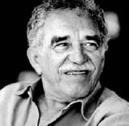

(1928 – )

Tam adı "Gabriel José de la Conciliación García Márquez" olan, bizim kısaca "Gabriel Garcia Marquez" olarak tanıdığımız, yakınlarının ise daha da kısaca "Gabo" diye hitap ettiği yazar; romanda "büyülü gerçekçilik" adı verilen anlatımın en büyük ustası kabul edilmektedir. Marquez, yaşadığı çağa romanlarıyla damgasını vurduğu kadar siyasal bir eylemci olarak da Güney Amerika ülkelerinde yaşanan insan hakları ihlallerine sessiz kalmamaktadır.
Latin Amerikan edebiyatının ölümsüz adlarından olan romancı Gabriel Garcia Marquez (okunuşu: Gabriel Garsia Markez), 6 Mart 1928 tarihinde Kolombiya'nın "muz cenneti" denen Magdalena bölgesindeki Aracataca kentinde dünyaya geldi. Annesi, Luisa Santiaga Márquez ve babası da eczacı Gabriel Eligio García idi. Büyükannesiyle büyükbabasının evinde ve teyzelerinin yanında büyüdü. On beş yaşındayken üstün yetenekli çocukların gönderildiği Zipaquira Lisesi'ne giden yazar, başkent Bogota'daki Kolombiya Ulusal Üniversitesi'nde başladığı hukuk ve gazetecilik öğrenimini yarım bıraktı. Arkadaşlarına göre Bogota'daki öğrencilik yıllarında, şarkıcı Carlos Gardel'in kılığına girip genelevleri dolaşmış hatta birkaç kez de para vermediği için dayak yemiştir. 1940'lardan başlayarak uzun yıllar gazetecilik yaptı. Öykü yazmaya 1940'ların sonlarında başladı. Yayımlanan ilk öyküsü 1947 tarihli Üçüncü Kabullenme, yayımlanan ilk önemli yapıtı ise Yaprak Fırtınası'ydı (1955). Aynı yıl El Espectador gazetesinin muhabiri olarak Avrupa'dayken gazetesinin diktatör Rojas Pinilla tarafından kapatılması üzerine işsiz kaldı. 1958 yılında Mercedes Barcha Pardo ile evlendi ve iki oğlu oldu.
1961'de yayımlanan Albaya Hiç Kimseden Mektup Yok adlı romanını, Hanım Ana'nın Cenaze Töreni (1962) adlı öykü kitabı ve Kötü Saatte (Şer Saati, 1962) izledi. Yazar, en tanınmış romanı Yüzyıllık Yalnızlık'ı (1967) Meksika'ya ilk gidişinde yazdı. Bir süre Barcelona'da yaşadıktan sonra, 70'lerin sonunda Meksika'ya yerleşti. 1982'de devlet başkanının özel çağrısı üzerine Kolombiya'ya döndü.
Yüzyıllık Yalnızlık'taki bir bölümden etkilenerek yazdığı öykülerini İyi Kalpli Erendina (1972) adlı kitapta toplayan yazar, daha sonra sırasıyla Mavi Bir Köpeğin Gözleri (1972), Başkan Babamızın Sonbaharı (1975), Kırmızı Pazartesi (1981), Kolera Günlerinde Aşk (1985), Kendi Labirentindeki General'i (1989) yayımlandı. Yazarın Türkiye'de yayınlanan diğer kitapları arasında Bir Kayıp Denizci, Sevgiden Öte Sürekli Ölüm, Aşk ve Öbür Cinler, Şili'de Gizlice, On İki Gezici Öykü ve Bir Kaçırılma Öyküsü sayılabilir.
1982 yılında Nobel Edebiyat Ödülü'nü kazanan Garcia Marquez, 1990 yılında ülkesinde yayımlanan haftalık dergi Cambio'yu satın almıştır.
1999 yılında lenf kanseri tanısıyla hastaneye kaldırılan yazarın Meksika'da öldüğü yolundaki internet haberleri tüm dünyayı sarmıştı, ancak bunların sahte olduğu ortaya çıktı. 2002 yılında yayımladığı, anılarının ilk cildi olan Anlatmak İçin Yaşamak'tan sonra piyasaya çıkam Benim Hüzünlü Orospularım (2004) on dört yaşındaki bir bakireyle birlikte olmaya çalışan doksan yaşındaki bir adamın ağzından anlatıldığı için Kolombiya'da fırtınalar koparılsa da kitap, yirmiden fazla dile çevrilerek dünyada büyük ilgi gördü.
Seçme Yapıtları: Yaprak Fırtınası (1955), Albaya Hiç Kimseden Mektup Yok (1961), Hanım Ana'nın Cenaze Töreni, (1962), Şer Saati (1962), Yüzyıllık Yalnızlık (1967), Sevgiden Öte Sürekli Ölüm (1970), Mavi Köpeğin Gözleri (1973), Başkan Babamızın Sonbaharı (1975), İyi Kalpli Erendira ile İnsafsız Büyükannesinin İnanılmaz ve Acıklı Öyküsü (1978), Kırmızı Pazartesi (1981), Kolera Günlerinde Aşk (1985), Kendi Labirentindeki General (1989), On İki Gezici Öykü (1992), Aşk ve Öbür İblisler (1994), Anlatmak İçin Yaşamak (2002), Benim Hüzünlü Orospularım (2004)